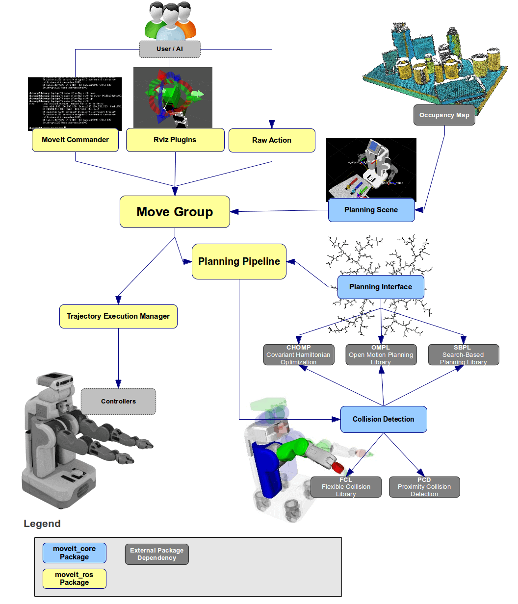

Moveit!介绍
ROS-Industrial介绍¶
ROS-Industrial是面向工业级开发的程序，是具备BSD（旧版）/ Apache 2.0（首选）许可，其中包含用于工业硬件的库，工具和驱动程序。 它得到了ROS工业联盟的支持和指导。 ROS-Industrial的目标是：
- 创建一个由工业机器人研究人员和专业人员支持的社区
- 为与行业相关的ROS应用提供一站式服务
- 开发功能强大且可靠的软件，以满足工业应用的需求
- 将ROS的相对优势与现有工业技术相结合（即将ROS的高级功能与工业机器人控制器的低级可靠性和安全性相结合）。
- 创建标准接口以刺激“与硬件无关”的软件开发（使用标准化的ROS消息）
- 使用通用的ROS架构为在行业应用中进行前沿研究提供一条捷径
- 提供简单，易于使用且文档完善的API
Moveit!介绍¶
MoveIt是使用最广泛的操纵软件，已在100多个机器人上使用。 它提供了一个易于使用的机器人平台，用于开发高级应用程序，评估新设计并为工业，商业，研发和其他领域构建集成产品。
通过整合运动计划，操纵，3D感知，运动学，控制和导航方面的最新进展，MoveIt是用于移动操纵的最先进软件。


-
move_group: move_group是MoveIt!的核心部分,可以综合机器人的各独立组件,为用户提供 一系列需要的动作指令和服务。从架构图中我们可以看到,move_group本身并不具备丰富的功 能,主要做各功能包、插件的集成。它通过消息或服务的形式接收机器人上传的点云信息、joints 的状态消息,还有机器人的tf tree,另外还需要ROS的参数服务器提供机器人的运动学参数,这些 参数会在使用setup assistant的过程中根据机器人的URDF模型文件,创建生成(SRDF和配置文 件)。
-
场景规划(Planning Scene):通过场景规划,用户可以创建一个具体的工作环境或者加入障碍 物。3. 运动规划(motion panning):在MoveIt!中,运动规划器起的作用是实现运动规划算法,其以插 件的方式通过ROS的pluginlib接口完成信息的通讯,根据需求可制作或选用不同的规划算法。
-
运动学(Kinematics):运动学算法是机械臂控制算法中的核心内容,其中包括正运动学算法和 逆运动学算法,在MoveIt!中,运动学算法同样以插件的形式完成于ROS的集成,因此可根据实际 需求,编写自己的运动学算法来控制机器人。
-
碰撞检测(collision checking):为避免机器人自身或者和环境发生干涉导致意外的发生,在进 行运动规划时碰撞检测是必不可少的一部分,在MoveIt!中,采用FCL(Flexible Collision Library)进行对象碰撞的运算。
-
开源运动规划库(open motion planning library):OMPL是一个的开源的C++库,主要用于运 动规划,其中包含了大量用于运动规划的先进算法。该库中的算法以采样规划算法为主,通过其可 以实现不同目标点之间的路径规划。